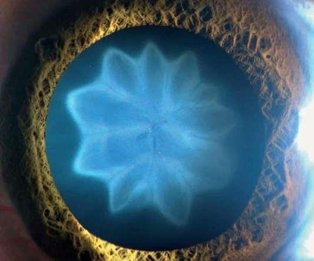

Cataract · 3) Traumatic Cataract
Traumatic Cataract
1) Concussion Cataract due to a Blunt Trauma:
- Lens opacity: posterior cortical, typically rosette shaped with feathery appearance due to aqueous entry delineation of the lens sutures and the individual lens fibers.
- Vossius ring: pigmentation of the anterior lens capsule due to the effect of the trauma on the pupillary border of the iris.
2) Traumatic Cataract due to a Perforating Trauma:
Cause:
- Perforating trauma by a needle, knife or an FB leading to lens capsule rupture.

3) Traumatic Cataract due to Physical trauma
Infra-red Rays
"Glass blower's cataract"
- Glass blowers and workers in high furnaces.
- Posterior cortical and progress to maturity
Radiation
- Unprotected techniques and the cancer patients
- Posterior cortical and progress to maturity
Electrical
- High electric current
- Anterior cortical